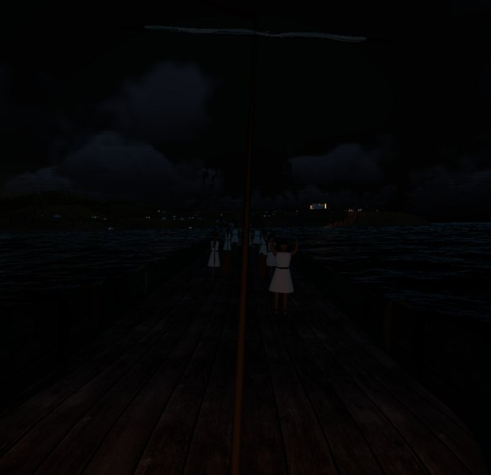
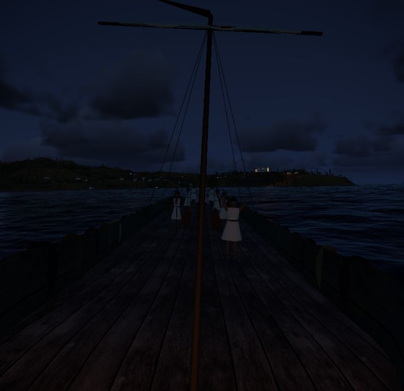

Skylight, across the day
Matched camera, ship pose, fixed cloud field, high quality, render scale 1. The strongest change is the blue-hour bridge at 19:30. Daytime direct light, exposure and ocean glitter retain their original formulas.
Before · frozen implementation snapshot
After · coherent skylight
19:30, full moon phase 0.5. The twilight addition is zero during daylight and deep night; exposure is matched.The reference snapshot already included the earlier moonlight/occlusion edits and cloud filtering experiment. These pairs show the new skylight integration relative to that exact snapshot. Atmospheric cloud detail is temporally filtered; residual small cloud-edge differences are possible. Source telemetry JSON files are saved beside each capture.